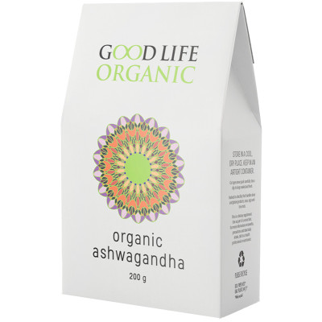
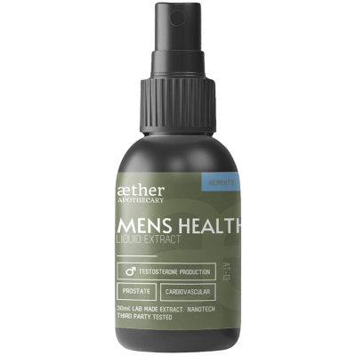
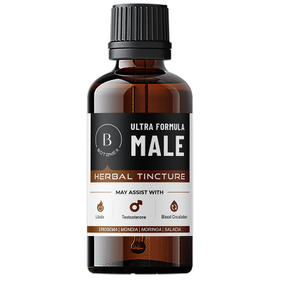
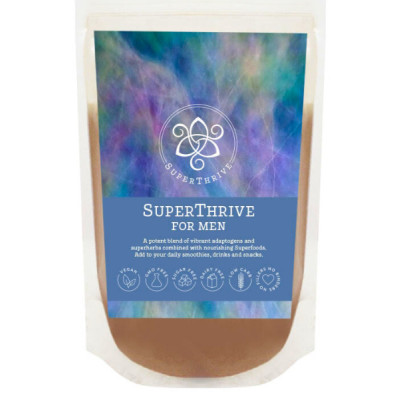
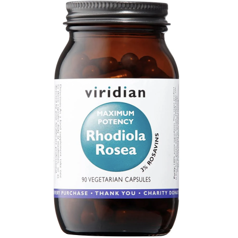
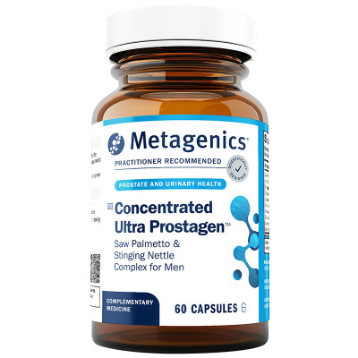

New guide · Nutrition guide
Omega-3 and Essential Fats: What to Know Before You Buy
Understand EPA, DHA and ALA, compare supplement labels, and learn what omega-3 research can—and cannot—tell us.
Read the guide →Explore featured product guides, ingredient explainers and practical questions to consider before buying. We bring together the science, the limitations and the product details—so you can make a more informed choice, at your own pace.

Our articles separate established nutrient functions from early research and marketing claims. Product details and prices can change; always check the retailer's current listing.
Understand EPA, DHA and ALA, compare supplement labels, and learn what omega-3 research can—and cannot—tell us.
Read the guide →
A grounded look at stress-support herbs, early research, realistic expectations and important safety checks.
Read the guide →
Learn what vitamins do, why high doses are not always better, and how to compare labels thoughtfully.
Read the guide →
Compare mineral forms and elemental amounts, and understand why dose and individual needs matter.
Read the guide →
Explore antioxidant biology, food sources and why broad supplement claims deserve a closer look.
Read the guide →
Read ingredient lists, consider sensitivities and keep expectations realistic when choosing personal-care products.
Read the guide →
A practical checklist for evaluating nutrition claims without falling for quick fixes or restrictive rules.
Read the guide →
Use a simple checklist to assess product claims, value, evidence and safety before you buy.
Read the guide →
Explore how vitamin K-dependent proteins are studied in vascular calcification, what clinical trials have found, and why K2 should not be described as a proven way to clear clogged arteries.
Read the K2 guide →
Explore how magnesium forms compare, why elemental magnesium matters, and what is known about low magnesium and supplementation.
Read the magnesium guide →
Discover zinc’s role in immunity, healing, skin and reproductive health, plus what to know about Sucrosomial® zinc.
Read the zinc guide →
Explore ashwagandha's traditional origins, the evidence around stress and sleep, and why adrenal-restoration and blood-pressure claims need care.
Read the ashwagandha guide →
Learn where maca comes from, what nutrients it provides, and what research does—and does not—show about energy, stress and sexual wellbeing.
Read the maca guide →
Explore black maca's origins, nutrients and early research—while separating possible effects from claims that remain unproven.
Read the black maca guide →
Explore zeolite's volcanic origins, its porous mineral structure, popular detox routines and important precautions around medicines.
Read the zeolite guide →
A careful look at the five-herb formula, the claims commonly made about men's vitality, and why herbal supplements should not be treated as proven hormone or prostate treatments.
Read the Aether guide →
Learn how this finger-prick PSA screening test works, how to understand the result patterns, and why follow-up matters.
Read the Prosta-Check guide →
Explore what early human studies say about Lion's Mane, cognitive health and mood, plus a closer look at PrimeSelf capsules.
Read the Lion's Mane guide →
Explore the research behind Tongkat Ali's testosterone and performance claims, the limits of current evidence, and important safety considerations.
Read the Tongkat Ali guide →
A balanced look at the herbal ingredients, claims about desire and menopause, the limits of the research, and important safety considerations.
Read the Luvido guide →
A balanced look at the herbal ingredients, claims about circulation and sexual wellbeing, limits of the evidence, and safety considerations.
Read the Libido Drive guide →
Explore castor oil’s conditioning uses, the limits of hair-growth claims, and precautions around sensitive skin and the eyes.
Read the castor oil guide →
A balanced guide to the probiotic strains, vaginal and urinary health claims, research limitations, packaging claims and safety considerations.
Read the probiotic guide →
A balanced look at copper-stored water, antimicrobial research, unproven wellness claims, copper exposure and bottle care.
Read the copper bottle guide →A balanced guide to inositol research, the formula's nutrients, limits of the evidence for PCOS and fertility, and important safety considerations.
Read the PCOSupport guide →
A balanced guide to haritaki’s traditional digestive uses, early research, broad marketing claims and important safety limits.
Read the haritaki guide →
A balanced guide to this four-herb tincture, claims about libido and vitality, what the evidence can and cannot establish, and safety questions to consider.
Read the Botanex guide →
A balanced guide to this nine-ingredient adaptogen blend, claims about vitality and stress resilience, evidence limitations and practical safety considerations.
Read the SuperThrive guide →
A balanced guide to this two-herb formula, evidence limitations around testosterone and performance claims, and practical safety considerations.
Read the Tribulus guide →
A balanced guide to the vitamins, minerals and other ingredients in this formula, evidence limits around fertility claims, and practical safety considerations.
Read the Viridian guide →
A balanced look at the formula, research on saw palmetto and stinging nettle, evidence limits, and when urinary symptoms need medical attention.
Read the Prostagen guide →
A balanced look at the blend of moringa, triphala, probiotics and fibre, including evidence limits and practical safety questions.
Read the gut health guide →
A practical look at this plant-oil blend, its ingredients, how body oils moisturise skin and what claims deserve a closer look.
Read the body oil guide →Explore this screen-free relaxation device, its guided sessions, who may find it useful, and what to consider before buying.
Read the product guide →An evidence-aware guide to omega-3 fats, Metagenics OmegaGenics fish oil, realistic expectations and safety checks.
Read the omega-3 guide →A balanced guide to collagen, hyaluronic acid and vitamin C, including evidence limits and practical safety checks.
Read the product guide →
A balanced look at the five-herb formula, what research can tell us, and important safety considerations.
Read the adaptogen guide →
Understand glutathione, the formula's ingredients, evidence limits and important safety considerations.
Read the GlutaClear guide →